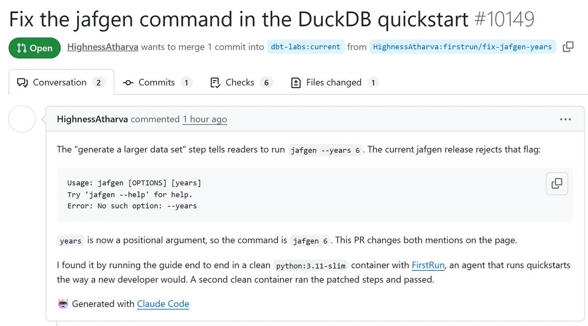
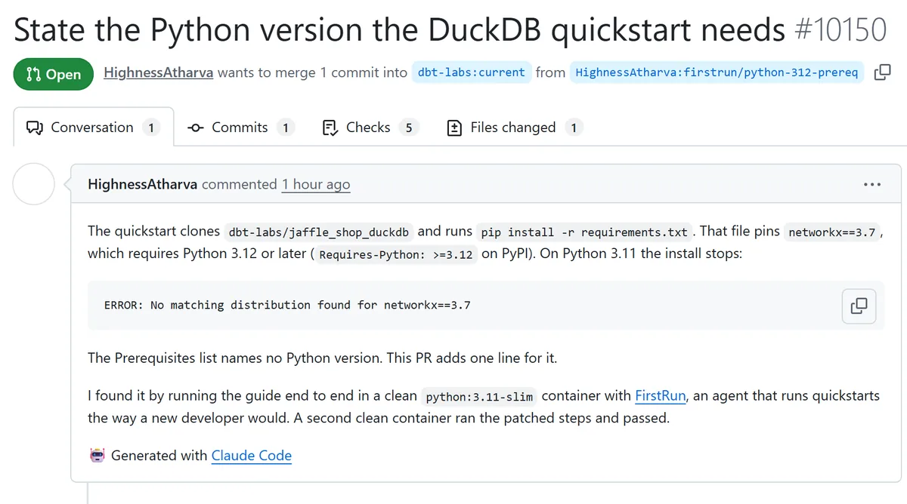
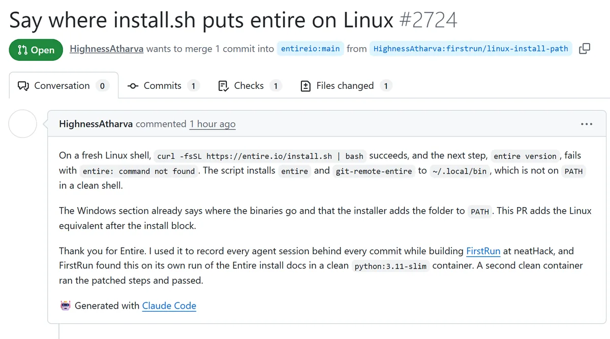
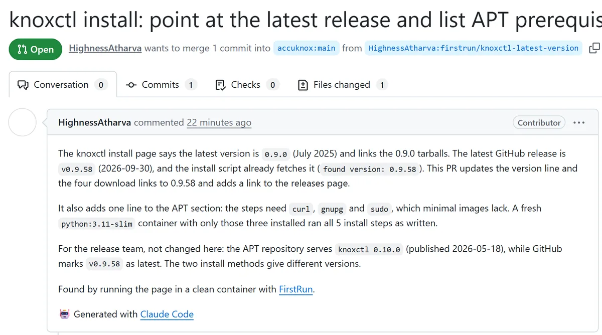

DocTest · 2:59
Your Docs Lie. FirstRun DocTest Proves It
A clean container runs the dbt guide, hits the step that breaks, fixes the page and passes a second run.
Doc-test runs your quickstart and proves each fix. Doc-audit finds the pages your code changed underneath.
A partial URL works. So does a tool name. Nothing leaves your browser.
Three short videos. Each one plays a real run.


 123
123Doc-test
Upstream
Doc-audit
neatlogs

Brokejafgen --years 6 fails with No such option: --years.

BrokeThe repo pins networkx==3.7, which needs Python 3.12.

BrokeAfter a good install, entire version says command not found.

BrokeThe page names 0.9.0 as latest. The installer already fetches 0.9.58.
Each finding changed the code.

Raised an incident and named the cause.
cd step broke the file check.A second investigation took v2 from 2 to 3 of 4 quickstarts.

Its review found a fix that never ran.
cd guard was never called.
Found a budget cap that ends the company.
neatlogs measures each run. cfo.ai turns the cost into a cap per tier. The CLI stops a run at that cap, and neatlogs alerts when runs drift past it. Open the plan
Each run ends with a receipt: what it cost, which tier caps it, and the proof it passed.
neatlogs measured
88 runs, one cost spreadMean $0.0178 a run. The worst run cost $0.1014.
drivers.csv, a trace per rowcfo.ai modeled
18 months from the tracesThree plans and six Scenarios. Every cost cell reads the measured drivers.
Open the public modelThe plan found
Cash runs out in month 14A $0.50 cap lets a Scale run cost five times its $0.0997 share.
Read the business planFirstRun enforces
The plan sets the capfirstrun run --tier scale stops a run at $0.0279. A neatlogs alert fires when the p95 run costs more.
Three cfo.ai Scenarios with the same customers. Only the cost cap or the Scale price changes.
The chart reads the cfo.ai figures from data/cfo-model.json.
Figures read back from cfo.ai on 2026-10-11, after the drivers moved to 88 traces. Model costs are Sonnet 5.5 list price, which Anthropic did not bill. Customer counts are assumptions until a team pays.
Five ways to test a quickstart. FirstRun stands out on three rows.
| Feature | FirstRun | Claude Code | GitHub Actions | GitHub Agents | Custom workflow |
|---|---|---|---|---|---|
| Runs the quickstart as a new developer | Every step runs in a fresh Docker container | Runs on your machine. An optional OS sandbox limits files and network | A fresh runner per job, but you script every step | Works in its own Actions-powered VM, on your repo, not a new-user setup | Only as clean as the environment you build |
| Plans steps from a docs URL | The planner writes one step per command | When you prompt it with the page | You write each step | Starts from an issue or task, not a docs page | You write the parser |
| Improvises when a step failsStands out | Classifies the failure, patches, retries up to 3 times per step | Iterates inside one session | The job fails and stops | Iterates in one session and pushes commits to its draft PR | Only what you code |
| Proves the fix | A second clean container must pass the whole quickstart | Only if you ask for it | Only if you script a second run | Your repo's own tests and CI, not a clean-user rerun | Only if you code it |
| Telemetry per runStands out | neatlogs spans for planner, executor and verifier. Measured cost of $0.02 per run | OpenTelemetry metrics and events, such as cost and tokens. Set up through environment variables | Logs and run history. No agent traces | A session log you can read or stream. No cost trace you own | You build it |
| Opens the docs PR | After you approve once | When you ask | Only if you script it | Opens a draft PR and asks you for review | Only if you code it |
| Ease of useStands out | Paste a docs URL, then paste the prompt into your coding agent | One prompt, but you define the test and the clean setup | A YAML file per quickstart | Assign an issue to Copilot | Highest effort |
| Proof in public repos | 4 upstream PRs, all open | Not specific to docs | Not specific to docs | Not specific to docs | Depends on your build |
Every step is a post on @cultist_dev.
my neatlogs hackathon project has already caught doc issues for a chroma (24K+ github stars). chromadb's deprecated-config error sends you to its own migration guide. that page returns 404.
Read the post on X
built this weekend at #neatHack, the AI agent hackathon by @neatlogs. stack: @EntireHQ records every coding session, @arithecfo builds the business plan.
Read the post on X
#neatHack kickoff, 12:30 IST. FirstRun code before kickoff: 0 lines. neatlogs doctor probe: 7/7 PASS. Solo build. Submission opens Monday, 7 PM IST.
Read the post on X
#neatHack, day one. all three required tools are up. Entire: trail #1 created. neatlogs: first agent trace, 3 steps, 12s. cfo.ai: Ari read my public profile.
Read the post on X
your quickstart is the only part of your product tested by people who leave instead of filing a bug. so for #neatHack i'm building FirstRun. break. fix. prove.
Watch the video on X
a quickstart breaks the way an agent breaks. quietly. so the plan for this weekend: every FirstRun run becomes a trace in @neatlogs.
Read the post on X
send me your quickstart and FirstRun runs it in a clean container before monday, 7 PM IST. reply with the name of a public quickstart page.
Read the post on X
4 docs PRs opened on day one of #neatHack, from an agent that runs a quickstart the way a new developer would. dbt-labs: 2, entireio/cli: 1, accuknox/help: 1.
Read the post on X
an agent that heals every failure on its own drifts toward its own guess of how your product works. FirstRun hits that call on every red step. #neatHack
Read the post on X
a maintainer who gets a PR from an agent asks one question. why should i trust this change? the session behind the diff answers it.
Read the post on X
FirstRun had no web UI at kickoff. that was the bet. by 3 PM on saturday it had one.
Read the post on X

Atharva is a DevRel engineer. He owns developer docs at AccuKnox and works with Altimate AI. He built FirstRun alone during the hackathon, in public.